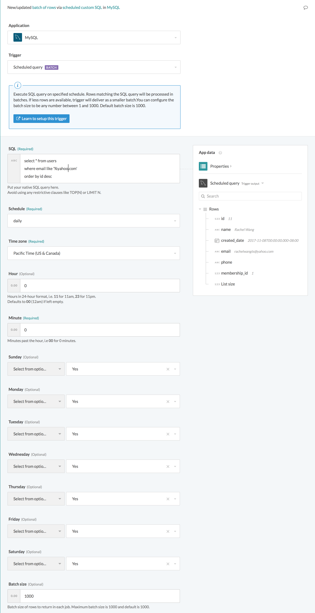

MySQL - Scheduled query trigger
New/updated batch of rows via scheduled custom SQL
This trigger picks up rows that are inserted/updated in the selected table or view. Each row is processed as a separate job. It checks for new/updated rows once every poll interval. The poll interval can be 10 mins or 5 mins, depending on your plan. Check the Pricing and Plans page to find out more.
 New/updated row trigger
| Input field | Description |
|---|---|
| SQL | Custom SQL query to be executed at each poll interval to pick up new rows. |
| Schedule | Choose how often you want the SQL to be run. |
| Timezone | Choose the timezone for the schedule to be set in. |
| Hour | Configure the hour of the day you wish to execute the SQL query. |
| Minute | Configure the minute in the hour you wish to execute the SQL query. |
| Day of month | Configure the day of the month you wish to execute the SQL query. |
| Days of week | Select the days of the week you wish to execute the SQL query. |
| Batch size | Configure the batch size to process in each individual job for this recipe. This defaults to 100. |
Input field details
SQL
Provide the SQL to be executed to select rows. The SQL here will be used to generate the output datatree. To do this, the SQL will be executed once when you provide it. You can map datapills here to execute dynamically changing SQL statements. Remember to wrap datapills in quotes ('').
Avoid using limit clauses like TOP in your SQL. This is because the limit to the number of rows returned in the query is based on the value defined in the Batch size input field. Adding your own limit clause will cause the action to fail.
Schedule
Select the type of schedule you want for your integration use case. This input fields is a pick list with the following available choices:
- hourly
- daily
- monthly
Timezone
Select the timezone for the scheduler to be set in. This is a required field.
Hour
Configure the hour of the day you wish to execute the scheduled SQL query. This is required only if you selected daily or monthly as the Schedule.
Minute
Configure the minute in the hour you wish to execute the scheduled SQL query. This is always required.
Day of month
Provide a value between 1 to 31 for the day of the month. In shorter months, the values may be rounded down to the last day of the month. For example: if you use the value 31 and the month ends before the 31st, the trigger will run the SQL query on the last day of the month (e.g. 28th Feb, 31st Mar, 30th Apr, and so on)
Needed only if you selected monthly as the Schedule. This is an optional field that defaults to first day of the month if left empty.
Days of week
Choose the days of the week you wish to execute the scheduled SQL query. This is required only if you selected hourly and daily as the Schedule. If you selected hourly, the trigger will execute the SQL hourly on days that are selected here.
Batch size
Batch size of rows to return in each job. This can be any number between 1 and the maximum batch size. Maximum batch size is 100 and default is 100.
In any given poll, if there are less rows than the configured batch size, this trigger will deliver all rows as a smaller batch.